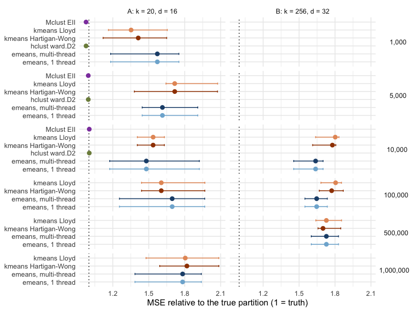

This article times emeans() against the clustering tools
most R users reach for: stats::kmeans() with Lloyd’s
algorithm and with the default Hartigan-Wong algorithm, Ward
hierarchical clustering (stats::hclust()), and Gaussian
mixture modelling (mclust::Mclust()), and checks how good
each partition is.
These methods solve different problems. hclust() builds
a full tree of merges and Mclust() fits a probabilistic
mixture model, while k-means and e-means minimise the within-cluster sum
of squares. Each one is asked for a k-cluster partition of
the same data.
The timings come from a single run on the machine described below, stored with the article; building the site does not re-run them.
library(emeansR)
library(mclust)
library(dplyr)
library(tidyr)
library(purrr)
library(tibble)
library(ggplot2)Setup
- Machine: Apple M2, 8 physical cores; R 4.6.1.
- Packages: emeansR 0.1.0, mclust 6.1.3.
-
emeans()runs with 3 epochs, on 1 thread and on 7 threads. Every other method is single-threaded.
Two scenarios, both Gaussian blobs (centers uniform in [-10, 10],
within-cluster standard deviation 2), with k equal to the
true number of clusters:
- Scenario A has 20 clusters in 16 dimensions and runs all six
methods.
hclust()andMclust()need memory that grows with n², so they stop at n = 10,000. - Scenario B has 256 clusters in 32 dimensions, closer to the
large-
ksettings in the paper. It runs only the k-means family, because a distance matrix is out of reach at these sizes.
make_data <- function(n, k, d) {
set.seed(1)
centers <- matrix(runif(k * d, -10, 10), k)
truth <- sample(k, n, TRUE)
list(x = centers[truth, ] + matrix(rnorm(n * d, sd = 2), n), truth = truth)
}Every method is a function from the data matrix to cluster labels.
kmeans() uses one random start and up to 25 iterations.
hclust() and Mclust() include the time to
build their distance matrix and hierarchical initialisation, since a
user pays it too. Each configuration runs with 5 seeds (3 seeds for the
largest scenario B size). The seed changes the starting centers;
hclust() is deterministic, so its seeds only repeat the
timing.
methods <- tribble(
~method, ~max_n, ~fit,
"emeans, 1 thread", Inf, function(x, k, s) emeans(x, k, nepochs = 3, seed = s, n_threads = 1)$cluster,
"emeans, multi-thread", Inf, function(x, k, s) emeans(x, k, nepochs = 3, seed = s, n_threads = threads)$cluster,
"kmeans Lloyd", Inf, function(x, k, s) { set.seed(s); suppressWarnings(kmeans(x, k, iter.max = 25, algorithm = "Lloyd"))$cluster },
"kmeans Hartigan-Wong", Inf, function(x, k, s) { set.seed(s); suppressWarnings(kmeans(x, k, iter.max = 25))$cluster },
"hclust ward.D2", 1e4, function(x, k, s) cutree(hclust(dist(x), method = "ward.D2"), k),
"Mclust EII", 1e4, function(x, k, s) { set.seed(s); Mclust(x, G = k, modelNames = "EII", verbose = FALSE)$classification }
)Quality has two measures. MSE is the within-cluster sum of squares divided by n, from each method’s own cluster means (lower is better). ARI is the adjusted Rand index against the true labels (1 = perfect).
mse <- function(x, cl) {
centers <- rowsum(x, cl) / as.vector(table(cl))
sum((x - centers[match(cl, sort(unique(cl))), ])^2) / nrow(x)
}
run_one <- function(f, d, k, seed) {
secs <- system.time(cl <- f(d$x, k, seed))[["elapsed"]]
tibble(seed = seed, seconds = secs, mse = mse(d$x, cl),
ari = adjustedRandIndex(cl, d$truth))
}
run_scenario <- function(name, k, dim, sizes, use, seeds_for) {
map(sizes, function(n) {
d <- make_data(n, k, dim)
methods |>
filter(method %in% use, n <= max_n) |>
mutate(runs = map(fit, \(f) map(seeds_for(n), \(s) run_one(f, d, k, s)) |> list_rbind())) |>
select(method, runs) |>
unnest(runs) |>
mutate(scenario = name, n = n, k = k, d = dim)
}) |>
list_rbind()
}
started <- Sys.time()
raw <- bind_rows(
run_scenario("A: k = 20, d = 16", k = 20, dim = 16,
sizes = c(1e3, 5e3, 1e4, 1e5, 1e6), use = methods$method,
seeds_for = \(n) 1:5),
run_scenario("B: k = 256, d = 32", k = 256, dim = 32,
sizes = c(1e4, 1e5, 5e5),
use = grep("emeans|kmeans", methods$method, value = TRUE),
seeds_for = \(n) if (n > 1e5) 1:3 else 1:5)
)
run_minutes <- as.numeric(difftime(Sys.time(), started, units = "mins"))
write.csv(raw, "../../.dev/articles/benchmark-results.csv", row.names = FALSE)
results <- raw |>
group_by(scenario, n, method) |>
summarise(seconds = median(seconds), mse_med = median(mse), mse_min = min(mse),
mse_max = max(mse), ari = median(ari), runs = n(),
floor = first(d) * 2^2, # expected MSE of the true partition: d * sd^2
.groups = "drop") |>
group_by(scenario, n) |>
mutate(speedup = seconds[method == "kmeans Hartigan-Wong"] / seconds) |>
ungroup()The full benchmark took 5.6 minutes.
Time
method_colours <- c(
"emeans, 1 thread" = "#7fb3d5", "emeans, multi-thread" = "#1f4e79",
"kmeans Lloyd" = "#e59866", "kmeans Hartigan-Wong" = "#a04000",
"hclust ward.D2" = "#7d8c4a", "Mclust EII" = "#8e44ad"
)
ggplot(results, aes(n, seconds, colour = method)) +
geom_line() +
geom_point(size = 2) +
facet_wrap(~scenario) +
scale_x_log10(labels = scales::label_number(scale_cut = scales::cut_short_scale())) +
scale_y_log10(labels = scales::label_number(accuracy = 0.001, drop0trailing = TRUE)) +
scale_colour_manual(values = method_colours) +
labs(x = "points (n)", y = "median seconds (log scale)", colour = NULL,
title = "Time to a k-cluster partition") +
theme_minimal() +
theme(legend.position = "bottom")
In scenario A at n = 10,000, multi-threaded emeans()
takes 0.004 s, against 0.016 s for the default kmeans(),
1.9 s for hclust() and 1.6 s for Mclust(). At
a million points it takes 0.38 s, against 1.7 s for
kmeans().
In scenario B at n = 500,000, emeans() takes 0.6 s on 7
threads and 1.6 s on one, against 16 s for kmeans(): a
26-fold speed-up.
results |>
filter(n %in% c(1e4, 1e6, 5e5)) |>
arrange(scenario, n, seconds) |>
mutate(n = format(n, big.mark = ",", scientific = FALSE),
`MSE (median, range)` = sprintf("%.1f (%.1f-%.1f)", mse_med, mse_min, mse_max)) |>
select(scenario, n, method, seconds, `speed-up vs kmeans` = speedup,
`MSE (median, range)`, ARI = ari) |>
knitr::kable(digits = c(0, 0, 0, 3, 1, 0, 3))| scenario | n | method | seconds | speed-up vs kmeans | MSE (median, range) | ARI |
|---|---|---|---|---|---|---|
| A: k = 20, d = 16 | 10,000 | emeans, 1 thread | 0.004 | 4.0 | 94.7 (75.1-123.0) | 0.875 |
| A: k = 20, d = 16 | 10,000 | emeans, multi-thread | 0.004 | 4.0 | 94.7 (75.1-123.0) | 0.875 |
| A: k = 20, d = 16 | 10,000 | kmeans Hartigan-Wong | 0.016 | 1.0 | 98.3 (89.9-104.3) | 0.869 |
| A: k = 20, d = 16 | 10,000 | kmeans Lloyd | 0.030 | 0.5 | 98.3 (89.9-104.3) | 0.869 |
| A: k = 20, d = 16 | 10,000 | Mclust EII | 1.647 | 0.0 | 64.2 (64.2-64.2) | 1.000 |
| A: k = 20, d = 16 | 10,000 | hclust ward.D2 | 1.883 | 0.0 | 64.2 (64.2-64.2) | 1.000 |
| A: k = 20, d = 16 | 1,000,000 | emeans, multi-thread | 0.377 | 4.4 | 114.1 (88.6-124.1) | 0.778 |
| A: k = 20, d = 16 | 1,000,000 | emeans, 1 thread | 0.478 | 3.5 | 114.1 (88.6-124.1) | 0.778 |
| A: k = 20, d = 16 | 1,000,000 | kmeans Hartigan-Wong | 1.652 | 1.0 | 116.4 (101.8-133.4) | 0.767 |
| A: k = 20, d = 16 | 1,000,000 | kmeans Lloyd | 3.591 | 0.5 | 115.5 (94.5-133.4) | 0.768 |
| B: k = 256, d = 32 | 10,000 | emeans, multi-thread | 0.019 | 13.6 | 209.7 (186.3-217.7) | 0.831 |
| B: k = 256, d = 32 | 10,000 | emeans, 1 thread | 0.030 | 8.6 | 209.7 (186.3-217.7) | 0.831 |
| B: k = 256, d = 32 | 10,000 | kmeans Hartigan-Wong | 0.259 | 1.0 | 227.6 (206.5-231.3) | 0.805 |
| B: k = 256, d = 32 | 10,000 | kmeans Lloyd | 0.301 | 0.9 | 230.7 (209.7-234.6) | 0.797 |
| B: k = 256, d = 32 | 500,000 | emeans, multi-thread | 0.601 | 26.2 | 221.2 (205.0-234.1) | 0.800 |
| B: k = 256, d = 32 | 500,000 | emeans, 1 thread | 1.629 | 9.6 | 221.2 (205.0-234.1) | 0.800 |
| B: k = 256, d = 32 | 500,000 | kmeans Hartigan-Wong | 15.718 | 1.0 | 217.6 (212.3-236.6) | 0.822 |
| B: k = 256, d = 32 | 500,000 | kmeans Lloyd | 47.198 | 0.3 | 221.2 (209.9-237.4) | 0.815 |
Quality
Each point is the median MSE over seeds divided by d × sd², the expected MSE of the true partition, so 1 means as good as the truth. The bars span the best and worst seed.
results |>
mutate(n = factor(format(n, big.mark = ",", scientific = FALSE),
levels = format(sort(unique(n)), big.mark = ",", scientific = FALSE))) |>
ggplot(aes(mse_med / floor, method, colour = method)) +
geom_vline(xintercept = 1, linetype = "dotted") +
geom_errorbarh(aes(xmin = mse_min / floor, xmax = mse_max / floor), height = 0.25) +
geom_point(size = 2.2) +
facet_grid(n ~ scenario, scales = "free_y", space = "free_y") +
scale_colour_manual(values = method_colours, guide = "none") +
labs(x = "MSE relative to the true partition (1 = truth)", y = NULL) +
theme_minimal() +
theme(strip.text.y = element_text(angle = 0))
#> Warning: `geom_errorbarh()` was deprecated in ggplot2 4.0.0.
#> ℹ Please use the `orientation` argument of `geom_errorbar()` instead.
#> This warning is displayed once per session.
#> Call `lifecycle::last_lifecycle_warnings()` to see where this warning was
#> generated.
#> `height` was translated to `width`.
In scenario A, with few well-separated clusters,
hclust() and Mclust() recover the true
clusters (ARI 1, MSE 64.2). Both k-means variants and e-means get stuck
from bad random starts and land in the same wide band of local minima:
across seeds their MSE spans 72 to 133. e-means is the fastest of the
three, and its median MSE is sometimes better and sometimes worse than
kmeans(). If the data are small enough for
hclust(), use it; otherwise run kmeans() or
emeans() with several starts and keep the best.
In scenario B, with many clusters, e-means is much faster at similar
quality. At n = 500,000 it takes 0.6 s against 16 s for
kmeans(), with median MSE 221.2 against 217.6 (+1.7%). At n
= 10,000 and 100,000 its median MSE is lower than that of
kmeans() (-7.9% and -7.1%).
From a single random start, neither k-means nor e-means reaches the true partition in either scenario: every k-means-family result sits above the noise floor of d × sd² (64 in A, 128 in B).
Caveats
- Synthetic, spherical blobs on one machine. Data with unequal or
elongated clusters favour
Mclust()’s richer models, which take far longer than theEIImodel timed here. -
kmeans()uses one random start. Withnstart = 10it takes about ten times as long and keeps the best of the ten; runningemeans()with several seeds and keeping the best works the same way. - The 3-epoch budget for
emeans()follows the paper’s finding that 1.2 to 3 epochs are usually enough. The default,nepochs = 5, takes longer; this benchmark did not measure its quality. - Times include everything a call does, including
emeans()’s final assignment of every row to the returned centers.